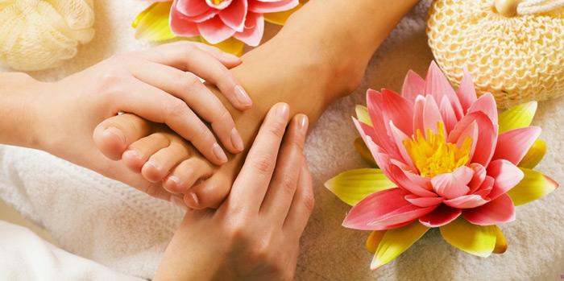

Czym jest refleksologia
Stopa ludzka to zakończenie 7200 nerwów, które mają bezpośrednie połączenie z mózgiem, a równocześnie z wszystkimi częściami ciała.
Refleksologia to nauka o refleksach które znajdują się w stopach i dłoniach i mają bezpośrednie połączenie ze wszystkimi gruczołami, organami i częściami ciała. To wyjątkowa metoda „chodzenia” kciukiem i palcami po tych refleksach.
Refleksoterapia to już konkretny zabieg. Zabieg refleksoterapii polega na dokładnym „przejściu” terapeutycznym całej stopy. W przypadku zdrowego organizmu stopa nie daje odczuć bolesnych sensacji i na całej powierzchni jest jednakowa. W przypadku natrafienia na zmiany zarówno wizualne (odmienny kolor naskórka, zrogowacenia), jak i rejony sprawiające ból sygnalizuje nam to występowanie problemu.
Refleksoterapia eliminuje stresy poprzez doprowadzenie do głębokiego relaksu, pozwala systemowi nerwowemu wyciszyć się i funkcjonować bardziej normalnie. Proces cyrkulacji krwi staje się stabilny, gładki, usprawniony, a tlen dochodzi do wszystkich komórek życia. Ciało dostrzega balans biologiczny – równowagę i następuje proces samouzdrawiania w naszym ciele.
Refleksolog nie jest lekarzem, nie diagnozuje, nie przepisuje leków niemniej umiejąc odczytać mowę stóp zauważa anomalie w nich występujące, czasami na długo przed ich fizycznym wystąpieniem w naszym systemie. Mając takie informacje zasugeruje wizytę u lekarza w celu potwierdzenia swoich spostrzeżeń. Powtarzanie zabiegów refleksologii ma na celu doprowadzenie naszego systemu do balansu biologicznego, usprawnienie cyrkulacji krwi, wyciszenie układu nerwowego, likwidowanie bólów, odblokowanie zatorów w organizmie poprzez wykorzystanie osobistego systemu obronnego każdego z nas. Poprzez prawidłową dietę i właściwy styl naszego życia pozbędziemy się dolegliwości do których doszło. Zabiegi refleksologii są metodą bezinwazyjną i w żadnym wypadku nie mogą zaszkodzić a ze względu na swoją uniwersalność mogą być stosowane w każdych warunkach wymagających naszej interwencji.


To nie refleksolog leczy – organizm leczy się sam!!!
Terapeuta tylko pomaga mu naturalnie i prawidłowo funkcjonować – eliminować toksyny i odblokowywać meridiany. Wszelkie procesy lecznicze są dziełem samego organizmu, my je tylko uaktywniamy i stymulujemy do działania. Refleksoterapia w ten sposób korzystnie oddziaływująca na wszystkich trzech poziomach: fizycznym, psychicznym i duchowym.
Wiedza merytoryczna zaczerpnięta z „Lepsze zdrowie z refleksologią stóp” Dwight C. Byers oraz „Praktyczna refleksologia drogą do zdrowia” Wanda Budzanowka - Bratko